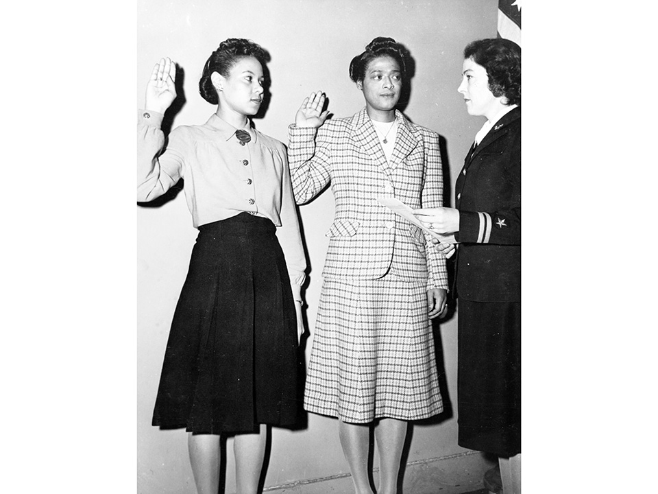
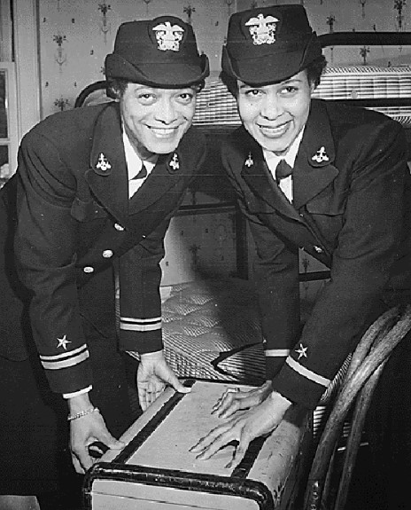
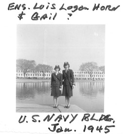
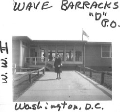
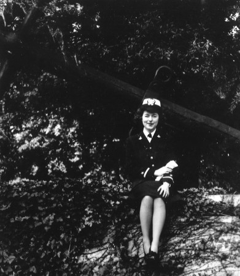

Pickens (left) and Wills (right), dressed in their formal military attire, standing in front of a U.S. government building.
The photograph depicts Pickens (right) and Wills (left) being sworn into the U.S. Navy reserves on November 16th, 1944.
Following graduation, Pickens (left) and Wills (right) are posing in their formal military attire for a staged photograph that was intended for public display.
Horn and Gail (unconfirmed) standing in front of a U.S. Navy building in 1945.
Horn standing in front of the WAVE barracks.
Horn, dressed in her formal military attire, sitting in front of the shank (stem of the anchor) of a decorative anchor.